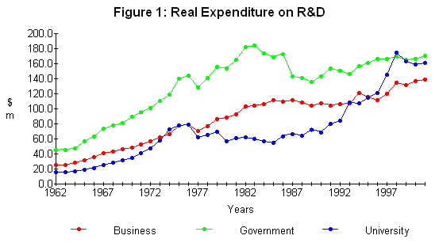
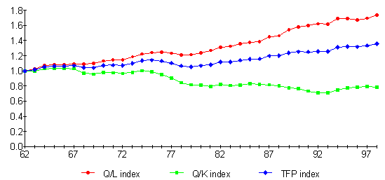

By
Robin Johnson(1)
R & D spending in New Zealand is a mixture of private and public investment undertaken to improve productive activity and efficiency. Investment is split fairly equally between private business, government organisations and the universities. It is a long term investment with some uncertainty about outcomes being achieved. It is predominantly a public good investment as most government organisations and universities are providers of R & D but not users of it and hence there is a discontinuity in the connection between investment and results. Furthurmore, the supply of R & D has properties of a free good which lead to users looking for new applications on a wider and wider front (spillovers). For these reasons R & D is generally regarded as a "good thing" rather than a "solid investment vehicle". Cost-benefit studies have shown, both in New Zealand and overseas, some projects with rates of return well in excess of the opportunity cost of capital, yet at the aggregate level there is a paucity of cost-benefit studies confirming such rates of return on a broader industry basis. This paper discusses some results from aggregate studies of the economic impact of R & D investment in NZ and suggests reasons why the links between aggregate supply of R & D and user demand are very weak.
Key Words: Investment, R & D Expenditure, Social Benefits.
By structural analysis, it is meant the institutional organisation of an industry may have some bearing on the impact of that industry on other industries. Institutional economics lays considerable stress on the relation between performance and structure. In the case of the science industry in New Zealand the institutions originally developed in a government-sponsored framework that some writers believe 'crowded out' private investment. Two large departments, the Department of Agriculture and the Department Scientific and Industrial Research, were created in a framework where it was thought individual producers could not afford to pay for research in their own interests. Even so, in the post-war years the DSIR was responsible for setting up a number of industrial research associations (DRI, WRO, MIRC) with joint funding from Government and industry. By reason of specialisation and skills, the universities were a separate institutional entity in the science industry, which largely drew on Government funding for this activity which was considered as a desirable adjunct of training in science on which they had a monopoly.
These relationships were changed by the reforms in the science establishment in the early 1990s which removed science from DSIR and MAF and created a series of subject research institutes (AgResearch etc) with private company charters. At the same time the Ministry of Research, Science and Technology (MoRST) was established as the policy body responsible for science and the Foundation of Research Science and Technology (FRST) was established as the funding body for government funds with a mandate to organise science funding on a competitive bidding process (Johnson 2000).
Another aspect of these reforms was an endeavour to find out how much exactly was spent on both private and public R & D. This task was entrusted to MoRST and started in the 1989 expenditure year. The survey was taken over by Statistics New Zealand in 2002. It is this survey which informs most of the comments and analysis presented in this paper.
Organisations which carry out R & D are called 'research providers' and the organisations which finance research are called 'research funders'. Private sector providers are called business (BERD), government (GERD) and universities (HERD for higher education) and are both providers and funders as are business. 'Providers' is the basis of all analytical tables used in this paper. The old research associations (DRI, WRO etc) are considered to be private providers of R & D. MoRST spent considerable effort in identifying output class areas which were categories based on the purposes of R & D used for public science funding ( MoRST Survey 1997, p. 27). Up to 2000, MoRST asked in the questionaires what output or outputs each firm/department/organisation was providing science services to? (I assume there was space for a multiple answer). In research utilising the MoRST output area data, we reclassify these outcome categories to fit ANZSIC (industry classification). Statistics New Zealand classifies BERD by ANZSIC categories and GERD by the appropriate ANZSIC categories This means that the meaning and intent of science output class areas has been put aside.
In addition to the MoRST Surveys (1989-2004), earlier statistics of R & D spending were collected by The National Research Advisory Council (NRAC) and Government Departments. These figures were assessed under various subject areas which approximated roughly to the output areas used by MoRST. In this way spending statistics by the private sector, universities and Government were extended back to 1961-62 for the following industry sectors:
The economic impact of R & D needs to be analysed in some benefit-cost framework. Earlier studies have included a study by Scobie and Eveleens of the agriculture sector where fairly clear records of research and extension expenditure had been kept (Scobie & Eveleens 1986). This study related R & D expenditure to a total productivity ratio (gross return/total input) for the sector drawn from the work of B.P. Philpott (1969). The Scobie and Eveleens study of agricultural productivity from 1926 to 1984 used a model in which the observed level of total productivity in agriculture in each year was dependent on:
The results showed that, on average, research results are slowly incorporated [in the case of livestock farming] into practice and their impact on productivity increased reaching a peak after 11 years and finally tailing off after a total of 23 years. In terms of research expenditure alone [i.e. holding other variables constant], $1m of research expenditure generated total benefits of $8.5m over the following 23 years, giving an internal rate of return of 30 per cent.
In agricultural circles, the total productivity ratio seems the obvious way to study production changes resulting from adoption of scientific procedures. On a wider industry basis, net output or value added is the statistical measure of production recorded. A productivity ratio like total factor productivity might then be employed (net output/weighted capital and labour inputs) for testing R & D impacts. If the underlying function adopted is Cobb Douglas then it may be relevant to make net output the dependent variable in the R & D analysis. Some of these variants are discussed later in the paper.
It has to be said that these are aggregate industry studies dependent on national collections of statistics. Project level data or even programme level data (within an organisation) may be a more precise approach to cost benefit studies.
The question remains as to where an industry obtains its R & D knowledge. A stock of knowledge is built up in continuing investment by public and private agencies both in NZ and overseas. It could be that all knowledge is available to everybody and one just has to plug into it. Some industries may generate their own. Or is part of the stock of knowledge specific to particular users or industries or locked up by legal means such as patents?. The MoRST system of science output area classes suggests that science users can be categorised in a useful way and R & D can be something specific to a group of users. This kind of hypothesis can be tested by relating productivity gains in an industry to specific sets of R & D knowledge (organised around science output area classes) or the general body of R & D knowledge. If one industry draws from another industry this is a form of economic spillover. It is thus quite important to examine where a group finds its relevant R & D knowledge and to look for links between groups.
Table 1 shows R & D expenditure from a provider point of view since 1990. National expenditure on R & D has risen from $725m in 1990-91 to $1467m in 2003-04. As can be seen, the amount has grown in line with the growth of national GDP. As far as the main providers are concerned, government has slowly withdrawn from research provision while the private sector and the universities have increased their share.
| Table 1: Research Expenditure by Major Providers % | |||||||||
|---|---|---|---|---|---|---|---|---|---|
| 1990 -91 |
1991 -92 |
1992 -93 |
1993 -94 |
1995 -96 |
1997 -98 |
1999 -00 |
2001 -02 |
2003 -04 |
|
| Business | 28.3 | 26.8 | 27.1 | 30.1 | 27.0 | 28.2 | 29.7 | 32.1 | 35.6 |
| Universities | 27.8 | 28.6 | 30.8 | 28.3 | 30.7 | 36.4 | 34.2 | 33.3 | 31.0 |
| Government | 43.9 | 44.6 | 42.1 | 41.6 | 42.2 | 35.3 | 36.0 | 34.6 | 33.4 |
| Total $m | 724.6 | 714.5 | 755.3 | 824.8 | 889.3 | 1107.4 | 1091.3 | 1308.3* | 1467.9* |
| % GDP | 0.99 | 0.98 | 1.00 | 1.03 | 0.98 | 1.10 | 1.01 | 1.06 | 1.07 |
| * sample total adjusted to 2000 survey basis. | |||||||||
| Sources: MoRST 1999 Survey and Statistcs New Zealand Updates. | |||||||||
Table 2 shows where the funds for R & D originate. Most university funds come from Government but not all of it (see Table 3). This table is presented to demonstrate the rising share of the private sector.
| Table 2: Funding of Providers of Science (%) | |||||||||
|---|---|---|---|---|---|---|---|---|---|
| 1990-91 | 1991-92 | 1992-93 | 1993-94 | 1995-96 | 1997-98 | 1999-00 | 2001-02 | 2003-04 | |
| Business | 29.3 | 27.4 | 29.7 | 33.8 | 33.7 | 30.5 | 33.9 | 33.4 | 36.7* |
| Government | 60.3 | 61.8 | 59.0 | 54.8 | 52.3 | 52.3 | 50.9 | 49.3 | 56.5* |
| Other | 10.4 | 10.8 | 11.3 | 11.4 | 14.0 | 17.2 | 15.1 | 17.3 | 6.8* |
| Total $m | 724.6 | 714.5 | 755.3 | 824.8 | 889.3 | 1107.4 | 1105.7 | 1329.9 | 1601.2* |
| * In 2000, 2002 and 2004 funding is not equalised with spending. In 2002 the matched sample is utilised. In 2004, the new sample is the only information available. | |||||||||
| Sources: MoRST 1999 and Statistics New Zealand. | |||||||||
Table 3 shows University sources of funds for some recent years. These do not show in Table 2. Government block grants predominate but the contractual system (FRST) is of growing importance and internally generated funds have remained at a constant proportion. There are not large linkages with business. In our econometric analysis, all University provider spending is treated as part of the Government sector.
| Table 3: Source of Funds for University R & D (%) | ||||||
|---|---|---|---|---|---|---|
| 1993-94 | 1995-96 | 1997-98 | 1999-00 | 2001-02 | 2003-04 | |
| General University funds | 46 | 35 | 36 | 28 | 23 | - |
| Research contracts (Govt) | 16 | 20 | 25 | 31 | 37 | - |
| Other funds (incl. student fees) | 23 | 27 | 29 | 26 | 26 | - |
| Business | 5 | 9 | 5 | 6 | 5 | - |
| Overseas | 3 | 5 | 3 | 5 | 3 | - |
| Others | 6 | 4 | 3 | 4 | 5 | - |
| Total $m | 233.5 | 273.5 | 403.5 | 374.1 | 435.8* | 454.8* |
| * on the new sample basis. | ||||||
| Source: Morst 1999 and Statistics New Zealand. | ||||||
Table 4 shows how the business sector funds its spending. This demonstrates, I think, the independence of the business R & D sector from the public sector, remembering the business sector includes the former research associations (WRO etc).
| Table 4: Sources of Funding for Private Sector (%) | |||||||||
|---|---|---|---|---|---|---|---|---|---|
| 1990-91 | 1991-92 | 1992-93 | 1993-94 | 1995-96 | 1997-98 | 1999-00 | 2001-02 | 2003-04 | |
| Business | 88.9 | 87.8 | 88.6 | 89.4 | 86.4 | 79.3 | 83.8 | 76.4 | 77.3 |
| Government* | 6.2 | 7.3 | 8.1 | 7.1 | 7.0 | 9.3 | 9.7 | 9.2 | 9.6 |
| Other# | 4.9 | 4.9 | 2.3 | 3.5 | 6.6 | 11.4 | 6.5 | 14.4 | 13.2 |
| Total $m | 204.4 | 191.7 | 204.8 | 247.9 | 240.3 | 312.5 | 326.2 | 423.5 | 648.1** |
| * includes higher education | |||||||||
| # includes private non-profit funds and overseas funds. | |||||||||
| ** based on 2004 sample | |||||||||
| Sources: MoRST 1999 and Statistics New Zealand. | |||||||||
Figure 1 shows the division of the R & D spending between the 3 main sectors in real terms since 1961. From 1989 the data is based on the MoRST surveys. For the intermediate years in which MoRST did not carry out a survey, the expenditure has been extrapolated in proportion to changes in nominal GDP. Prior to 1989, the NRAC data for Government expenditure is used. For Universities a fixed proportion of the Government Block Grant is used. For Business the proportion of business expenditure to nominal GDP in 1989 is carried back to 1961-62.
Real expenditure by Government was rising rapidly up to the early 1980s but has since plateaued with quite a reduction in real terms in the 1980s. The trend in University expenditure up to the late 1980s reflects the Block Grant allocation and is only a guide to actual R & D expenditure by the Universities. In the private sector the trend reflects GDP growth and is only an approximation to what private enterprise might have spent on R & D.
The impact of R & D investment will be felt in the longer run in production levels and efficiency. One approach is to observe production changes as reflected in real national product and seek explanatory changes in capital employed, labour employed and previous R & D investment.
The two approaches are related. Both can be derived from a production function of the form:
(1) Y = A Ka Lb,
where
Y is output:
A is productivity;
K is the stock of physical capital; and
L is labour.
If productivity can be explained by the stock of knowledge capital and other factors, then equation (1) can be rewritten as:
(2) Y = Ka Lb Rg Zs,
where R is the stock of knowledge capital; and
Z is other factors affecting measured productivity.
In the production function approach, a log linear version of equation (2) is estimated directly:
(3) ln Y = a ln K + b ln L + g ln R + s ln Z,
with no further restrictions placed upon the parameters. The estimate of g would provide a direct estimate of the percentage increase in output obtainable from a one per cent increase in knowledge stocks, holding all other factors constant.
In the two-step productivity approach, equation (3) would be rewritten as :
(4) ln Y - a ln K - b ln L = g ln R + s ln Z
Under the additional assumptions that a + b = 1 and that a and b equal capital and labour income shares, the left-hand side of (4) equals multi-factor productivity (in level, not growth form), as conventionally measured in a growth accounting framework. Observations on multi-factor productivity can then be regressed on the variables shown on the RHS.
In either case, estimates of the parameter g can be converted from an elasticity to an overall rate of return dY/dR as given by:
(5) dY/dR = g (Y/R).(2)
The capital variable K is derived from capital expenditure data by the perpetual inventory method:
(6) Kt = (1 - f) Kt-1 + Et-1
where
Kt = the stock of conventional capital at the beginning of period t in constant prices;
Kt-1 = the stock of capital at the beginning of period t-1;
Et-1 = capital expenditure during period t-1 in constant prices; and
f = the depreciation or obsolescence rate of capital.
In this study, Philpott's data on capital employed in different sectors is utilised. Philpott does not use diminishing balance depreciation rates but substitutes a formula taking in the average life of assets (Philpott 1994). These estimates of the capital employed are about 50 per cent greater than those determined by book depreciation methods (Philpott 1995).
The perpetual inventory method is also applied to the R & D variables. The expenditures shown in Figure 1 are transformed as in equation (6). Knowledge is regarded as a stock of available technologies which can be added to and subtracted from. The reduction process can be treated as the depreciation factor. The initial stock of knowledge has to be established from the available data by a formula of the kind:
(7) So = Eo / (e + f),
where
So = the stock of R & D capital at the beginning of the first year for which expenditure data is available;
Eo = the annual expenditure on R & D (in constant prices) during the first year;
e = the average annual logarithmic growth of R & D expenditures for the nearest relevant years; and
f the depreciation or obsolescence rate of knowledge.
The assumption is that if the stock had been growing before the first year at a certain rate, then the estimate of the total starting stock will be that much higher than it would have been if expenditure were capitalised by the rate of depreciation alone. In the estimates used in this paper e was estimated for the first ten years after 1962, and f was set at 5 per cent per year. Thus the starting stock for the market sector is:
(8) So = $86.3m / (0.1 + 0.05)
= $575.3m (in $1982-83)
The choice of a rate of depreciation of a knowledge stock is a difficult question. It seems clear that new inventions and ways of doing things replace older inventions and ways. The stock is thus a moving entity - constantly wasted and constantly replenished. Evidence is lacking on what is the appropriate course of action. Scobie and Eveleens (1986) note that "average research results are slowly incorporated into practice and their impact on productivity increases [in agriculture] reaching a peak after 11 years, and finally tailing off after a total of 23 years". This suggest a "life" of research of about 20 years with the maximum effect in the mid years of that period. Thus a rate of 5-10 per cent might be quite appropriate for a country like New Zealand - the results presented here are calculated at 5 per cent.
The second approach is to isolate the productivity change as a residual after capital and labour returns have been allowed for. This is the total factor productivity index (TFP) which is defined as the net output of an industry divided by the weighted sum of the labour and capital inputs used. In national accounting terms the ratio is:
(9) TFPi = Yi / aiLi + biKi
where ai and bi are the average factor shares of income in nominal terms for the ith industry. For example, in the market sector as a whole the share of L is 0.60 and K is 0.40.
The TFP index can be regarded (by re-arrangement of (9) above) as the weighted mean of the labour and capital productivity indices:
(10) TFPi = ai(Yi / Li) + bi(Yi / K i).
The actual data and factor shares from the Philpott data set are available in the form:
Y it. Real GDP by SNA industry group ($m in 1982-83 prices).
L it. Employment in SNA industry groups (`000 full time equivalents).
K it. Real gross capital stock by SNA industry group ($m in 1982-83 prices).
ai and b i. Average factor shares in nominal $.
The ratios in equation (10) are shown in Figure 2 for the national market economy with base year weights (n.b. excluding owner-occupied dwellings and government services).
Figure 2: Components of National Productivity

We first test the Cobb-Douglas hypothesis (Equations (2) and (3)) in a step-wise manner for the market economy and for the agriculture sector(Tables 5 and 6). The variables are:
Sectoral Real GDP as a function of:
Labour in full time equivalents (Philpott)
Real Capital Gross Stocks (Philpott)
Real Stocks of Private R & D depreciated at 5%
Real Stocks of Public R & D depreciated at 5%
Real Stocks of Australian R & D (reflecting a source of
external spillovers)
Real Expenditure on Education in NZ (reflecting upgrading of
skills)
In Table 5, hypothesis a. has good properties for expected values for Labour and Capital approximating to their factor shares. In hypothesis b. private R & D is highly positive but public R & D highly negative. In hypothesis c. both external factors are not significant. In Table 6 the Cobb-Douglas fit is very poor; there is again a high return to private R & D and a negative return to public R & D; no influence from Australian R & D; but a suggestion of an influence from skill levels in the economy.
Table 7 shows the regression results derived from equation (4). The dependent variable is now total factor productivity as defined in equation (9). Constant factor shares (averages) were used as weights for capital and labour inputs. We also show the RORs for these results as derived by the formula in equation (5). For MK the size of the R & D coefficient is smaller but of the same sign. For AGR the R & D coefficients are barely changed from Table 6. Australian R & D comes through as significant for MK and AGR and EDU cames through in AGR again. The ROR for PVTR & D is quite high in both equations but the ROR for PUBR & D is low and negative.
| Table 5: Full Cobb-Douglas Results for Market Economy | ||||||
|---|---|---|---|---|---|---|
| Variable Option |
Labour | Capital | PVTR&D | PUBR&D | AUST | EDU |
| a. | 0.54 (5.2) | 0.56 (18.9) | ||||
| b. | 1.06 (12.5) | 0.58 (4.1) | 0.70 (4.5) | -0.78 (-7.1) | ||
| c. | 0.95 (9.3) | 0.37 (1.7) | 0.57 (3.5) | -0.59 (-3.6) | 0.07 (1.2) | 0.03 (0.5) |
| (t test in brackets) | ||||||
| Table 6: Full Cobb-Douglas Results for Agriculture | ||||||
|---|---|---|---|---|---|---|
| Variable Option |
Labour | Capital | PVTR&D | PUBR&D | AUST | EDU |
| a. | -2.56 (-6.1) | 2.42 (8.7) | ||||
| b. | 0.66 (1.3) | 1.63 (2.2) | 2.24 (6.3) | -2.01 (-5.7) | ||
| c. | 1.08 (2.5) | 2.15 (1.6) | 2.56 (3.9) | -2.57 (-5.6) | -0.1 (1.0) | 0.5 (2.8) |
| (t test in brackets) | ||||||
| Table 7: Factor Productivity Results for Market Sector&Agriculture | ||||
|---|---|---|---|---|
| Private R & D | Public R & D | AUST | EDU | |
| Option | ||||
| a.MK | 0.39 (3.1) | -0.38 (-3.3) | 0.13 (3.7) | 0.02(0.4) |
| b.AGR | 2.91 (6.7) | -2.51 (-6.7) | -0.46 (-2.7) | 0.60 (3.7) |
| c.ROR MK* | $11.9 | -$4.8 | ||
| d. ROR AGR* | $68.7 | -$6.7 | ||
| * ROR=Rate of Return; $return per $ of depreciated R & D stock; i.e. accumulated investment in R & D. | ||||
All of these results utilise stocks of R & D knowledge as an independent variable. As already indicated, the stock of knowledge concept is rather hypothetical and its rate of wastage or depreciation equally so. Table 8 shows the sensitivity of the results in Table 7 to changes in the wastage rate. (There is a small change in the specification that changes the earlier result slightly). It appears that manipulation of the wastage rate is compensatory; the elasticity decreases as the wastage rate increases and the rate of return rises slightly in each case.
| Table 8 Sensitivity of Elasticity to the Wastage Rate for R & D Stocks | ||||
|---|---|---|---|---|
| (Same formulation as Table 7) | ||||
| Rate | PVTMK | PUBMK | PVTAGR | PUBAGR |
| 5% | 0.34 | -0.35 | 2.59 | -2.32 |
| 10 | 0.30 | -0.29 | 2.28 | -1.98 |
| 20 | 0.20 | -0.20 | 1.61 | -1.46 |
| 30 | 0.15 | -0.17 | 1.28 | -1.24 |
| 40 | 0.12 | -0.15 | 1.08 | -1.11 |
| 50 | 0.11 | -0.14 | 0.95 | -1.03 |
| Annual | 0.07 | -0.07 | 0.69 | -0.65 |
MoRST has been extremely concerned about the negative relationship between public R & D stocks and the two productivity measures employed. In terms of the industry breakdown employed in the larger study, private R & D stocks are positively related to changes in TFP in 7 cases out of 10; public R & D is positively related to changes in TFP in 4 cases out of 10; external R & D is positively related to changes in TFP in 7 cases out of 10; and education expenditure is positively related to changes in TFP in 4 cases out of 10. In the market economy as a whole there is a positive result for private R & D stocks and a negative result for public R & D stocks.
As Scobie and Eveleens have shown, there is a relationship between R & D annual expenditure over the long term and productivity in AGR. Table 9 shows the relationship in this set of data for the market economy and agriculture sectors using TFP as the dependent variable. Since the individual elasticities are additive the overall productivity effect of R & D investment can be assessed by this method. In both the market economy and agriculture there is now an overall positive relation between public R & D and productivity. There is clearly a negative relationship between the 4th and the 9th year in public investment in both sectors which seems to be common to most industries. Private investment in R & D in AGR is positive through the system reflecting the high elasticity and rate of return obtained earlier.
| Table 9: Polynomial Distributed Lag Effect | ||||
|---|---|---|---|---|
| Lag | PVTMK | PUBMK | PVTAGR | PUBAGR |
| -1 | -0.001 | 0.130 | 0.147 | 0.459 |
| -2 | -0.026 | 0.045 | 0.114 | 0.207 |
| -3 | -0.040 | -0.014 | 0.088 | 0.029 |
| -4 | -0.044 | -0.051 | 0.070 | -0.085 |
| -5 | -0.040 | -0.068 | 0.058 | -0.145 |
| -6 | -0.030 | -0.070 | 0.052 | -0.160 |
| -7 | -0.016 | -0.059 | 0.049 | -0.140 |
| -8 | 0.001 | -0.040 | 0.049 | -0.094 |
| -9 | 0.018 | -0.016 | 0.050 | -0.034 |
| -10 | 0.035 | 0.010 | 0.052 | 0.032 |
| -11 | 0.048 | 0.034 | 0.053 | 0.094 |
| -12 | 0.056 | 0.052 | 0.051 | 0.143 |
| -13 | 0.057 | 0.061 | 0.046 | 0.167 |
| -14 | 0.049 | 0.058 | 0.037 | 0.158 |
| -15 | 0.031 | 0.039 | 0.022 | 0.105 |
| Sums | 0.096 | 0.112 | 0.940 | 0.736 |
| Turning points | 4, 13 | 6, 13 | 6, 12 | 6, 13 |
The assumption that R & D can be conveniently divided into private and public providers can be challenged although the insight it reveals is useful as the results so far show. Table 10 recalculates some of the main results for AGR with a variable amalgamating the components of R & D. By itself ALLR & D is strongly and positively related to changes in TFP. However its strength of asociation is lost when regressed with AUST and EDU in the same equation. Curiously the strongest relationship is that with Australian stocks of R & D. This is inconsistent with the result in Table 6.
| Table 10: Amalgamation of Private and Public R & D for Agriculture | |||
|---|---|---|---|
| Option | ALL R&D | AUST | EDU |
| a. | 0.39 (10.4) | ||
| b. | 0.25 (0.4) | 0.62 (7.2) | |
| c. | 0.06 (0.5) | 0.72 (2.8) | |
| d. | -0.02 (-0.2) | 0.61 (5.9) | 0.06 (0.3) |
We next examine the source of R & D knowledge employed in an industry. We use the agricultural sector as an example. There are two hypotheses to examine. We can ask whether the source of R & D knowledge is outside the immediate industry environs - in this case such an effect could be called a spillover from one industry to another. Secondly we can ask whether the additional source of R & D complements the R & D already held or is a substitute for it. We create two new variables; PVTOTHER and PUBOTHER; being the stock of R & D not designated as belonging to the AGR science output area as defined by MoRST. We then create another variable 'MULT' which is the geometric sum of the two stocks of R & D. A positive sign indicates complementarity and a negative sign indicates substitution between own stocks and other stocks. In Table 11, PVTOTHER is not quite significant at the 5% level and is certainly of the right sign. PUBOTHER does not feature strongly. In the case of MULT the coefficients are negative (indicating substitution at work) but only that for PUBR & D is significant at the 5% level. Since PUBR & D by itself has a negative elasticity the MULT result amounts to reinforcing the negative effect on TFP.
| Table 11: Spillovers in the Agriculture Sector | |||||
|---|---|---|---|---|---|
| Option | PVTR & D | PUBR & D | PVTOTHER | PUBOTHER | MULT* |
| a. | 1.24 (2.7) | -1.95 (-7.0) | 1.14 (1.7) | ||
| b. | 1.91 (8.5) | -1.91 (-2.9) | 0.41 (0.5) | ||
| c. | 2.28 (3.0) | -2.26 (-7.2) | 1.05 (1.8) | -0.07 (-1.3) | |
| d. | 2.91 (6.9) | -0.09 (-0.1) | -1.01 (-1.3) | -0.13 (-2.3) | |
| * MULT is a variable representing the multiplicand of PVTR & D and PVTOTHER. See text. Likewise for PUBR & D and PUBOTHER. | |||||
A more sophisticated approach to the structure of returns in the science system, using the same set of data, is to treat the sectoral data as a cross-section panel (Johnson, Razzak & Stillman, 2005). This gives a 9x37 set of observations. The function was assumed Cobb Douglas and the data normalised by dividing throughout by the labour variable. Hence the results can be interpreted as factors which affect labour productivity across sectors in the economy. This variable enters the estimating equation on the RHS as output per person lagged by one year and is statistically significant. The response to capital per employee is variable and not significant in every specification explored. The results tend to support a constant returns to scale hypothesis. Across industries, the elasticity of private R & D stocks is positive in all regressions tried, but the own effect of public R & D stocks is negative and barely significant. Spillovers were tested by including each industry R & D stock as an independent variable. This measures the effect of a given industry stock on all other industries. For private R & D there were measurable spillovers from building, forestry and services and for public R & D smaller spillovers from the agriculture and transport industries.
These results confirm the simpler statistical models where private R & D has a small positive impact on own-industry output after controlling for capital and labout inputs, and some evidence that this R & D spills over from certain industries to the overall economy. Publicly provided R & D does not appear to have a positive impact on either own-industry output or the overall economy. These results are consistent with economic theory in the sense that private R & D investments should be more efficient as private firms will not undertake such investments unless they expect a positive return. On the other hand, publicly provided R & D often has goals beyond profit maxmisation. (op cit, p.11).
Table 12 shows the results of cost-benefit studies on a project basis undertaken by FRST. While these may be possibly 'successful' projects, they have longer track records that permit evaluation. The results are generally very favourable. It is not clear to me whether the methodology is always the same in each case study. There is a need to be clear about private returns and social returns to investment and whether national income conventions are being observed. We should look forward to more of these evaluations.
The results obtained by myself and Johnson et al are drawn from a single set of data. Some of the R & D data is drawn from surveys in the period from 1989 to 2000, while some of the R & D data is extrapolated from less reliable sources for the earlier period. National income, labour employment, and capital stock are drawn from the data base set up by B. P. Philpott which is consistent for the whole period of study. The allocation of R & D expenditure to a particular industry relies on the MoRST system of 'science output areas' where providers try to identify the probable users of that research. Before 1989, public expenditure on R & D was gleaned from Government and NRAC records and the industry allocation depended on the department carrying it out. For private expenditure on R & D the allocation was roughly in line with that found in 1989.
For these reasons, the association between R & D expenditure and particular industries is weak in the data. The set for the market economy is stronger in this sense because these allocation errors are avoided. The difference between the results for PVR & D and PUR & D in both studies appears to be partly due to these measurement errors and partly due to a conceptual difference associated with the aim of scientific research. The latter is perhaps best encapsulated in the notion of short-term versus long-term investment strategies. The state, perhaps, has set scientific objectives, in the past, that aimed at the national good in a longer term framework. The results of such research permeate into society rather slowly and unevenly. It may be virtually unmeasurable! On the other hand, we would expect private enterprise to invest in areas where there was a forseeable gain for them. (This is pure hypothesis of course, given the measurement errors in 'science output areas').
The analysis does demonstrate, I think, that it is the general
pool of knowledge which is important in the economic utilisation of
scientific research rather than any special designated research.
Maybe we should stop looking for spillovers (between industries
say) and accept that knowledge is a general resource available to
anyone apart from where particular patents or ownership
restrictions apply. It might be important to bear in mind Griliches
(1979) definition where he says The level of productivity
achieved by one firm or industry depends not only on its own
research efforts but also on the level of the pool of general
knowledge accessible to it
.
1. Griliches, Z.(1979), Issues in Assessing the Contribution of Research and Development to Productivity Growth, Bell Journal of Economics 10, 92-116.
2. Johnson, RWM (1999), The Rate of Return on NZ R & D, NZ Assocation of Economists, Rotorua.
3. Johnson, RWM and Forbes RN (2000), Recent Productivity Trends in New Zealand Primary Sectors, MAFPolicy Technical Paper No 2000/20. Wellington.
4. Johnson, Robin (2000), Crowding Out and Resulting Trends in Research Fund Allocation in New Zealand 1991-2000, NZ Economic Papers 34(1), pp 129-147.
5. Johnson Robin, W A Razzak & Steven Stillman (2005), 'Has NZ benefited from its investment in research and development?', unpublished ms., Department of Labour.
6. MoRST (1999), New Zealand Research and Development Statistics 1997/98, Publication No 17, Wellington.
7. Philpott, B P and Hussey DD (1969), Productivity and Income of New Zealand Agriculture 1921-67, Agricultural Economics Research Unit Research Report No 59, Lincoln University.
8. Philpott B.P. (1994), Data base of Nominal and Real Output, Labour, and Capital Employed by SNA Industry group 1960-1990, RPEP Paper 265, Victoria University.
9. Philpott B.P. (1995), Real Net Capital Stock by SNA Production Groups New Zealand 1950-1991, RPEP Paper 270.
10. Scobie, G and Eveleens W (1986), Agricultural Research: What's it Worth?, Research Paper no 1/86, Economics Division, MAF, Hamilton.
(1) Consultant, Wellington
(2) This is not equivalent to the internal rate of return. The IRR would need to be estimated from the long term responses in productivity.